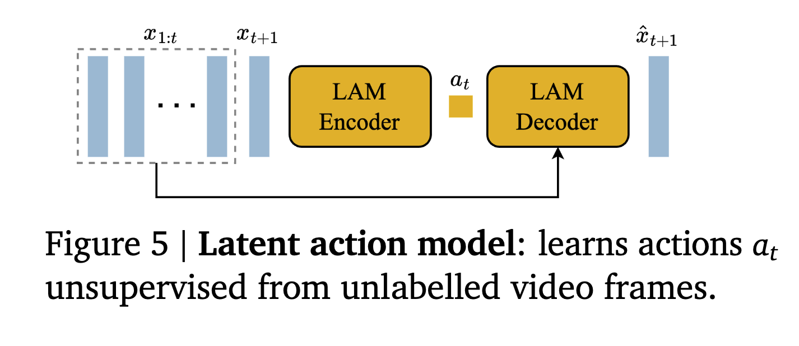
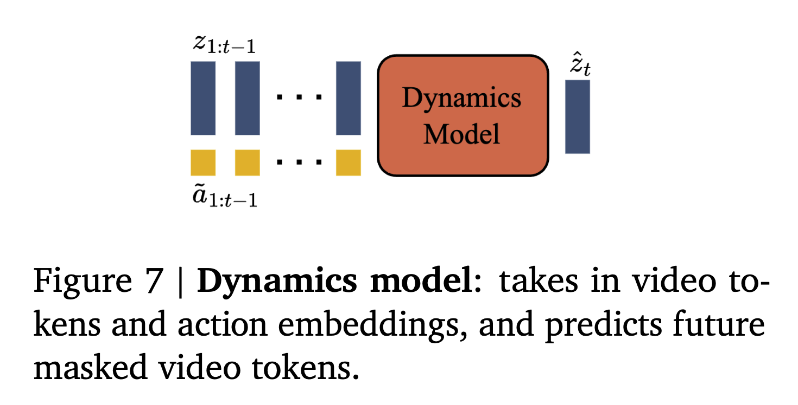

Genie: Generative Interactive Environments
Genie introduces a novel approach for creating Generative Interactive Environments, specifically targeting platformer games. This system is unsupervised and can generate action-controllable virtual worlds described through text, synthetic images, or even sketches, without requiring ground-truth actions.
The system leverages publicly available Internet gaming videos. It incorporates a video tokenizer and extracts latent actions via a causal action model. Furthermore, a separate model trained on robotic datasets demonstrates the applicability of this method to generalist agents.
Method
Spatial-Temporal Transformer
- To address the quadratic memory issues often encountered in transformer architectures, Genie employs a specialized Spatial-Temporal Transformer.
- In the spatial attention layer, it only considers tokens within the same time step.
- In the temporal attention layer, it focuses solely on all tokens belonging to the same patch across all time steps.
- spatial attn -> temporal attn -> FFN
Latent Action Model
- LAM infers the latent action between each pair of frames.
- Crucially, this inference operates on pixels rather than tokens, which means the LAM decoder output in pixel space, not tokens.

Video Tokenizer
- The video tokenizer converts raw video frames into discrete tokens, denoted as
z.
- Unlike previous works that might only encode spatial information for a single frame, this tokenizer encodes both spatial and temporal information simultaneously.
Dynamics Model
- Given the latent action and frame tokens, the dynamics model is responsible for predicting the next frame.

Training Process
Stage 1: Video Tokenizer Training
- The video tokenizer is trained independently in the first stage.
Stage 2: Co-training the Latent Action Model and Dynamics Model
- The input for LAM consists of frames x1:t+1.
- The encoder of the LAM outputs a series of continuous latent actions a1:t.
- The decoder of the LAM then predicts the next frame x2:t+1, given the previous frames x1:t and the inferred latent actions a1:t.
- The LAM decoder is different from Dynamics model. Its input and output are in pixel space, but Dynamics model are using tokens from the video tokenizer.
- LAM decoder is only used to provide training signal.
- The size of the codebook used in LAM is 8, reflecting the typically small range of human inputs.
Latent Action Model
- All frames within the LAM operate in pixel space.
- The LAM’s encoder extracts a sequence of latent actions from a series of preceding frames.
- Its decoder takes previous frames and these latent actions as input to predict the subsequent frame.
- Since the decoder already has access to the previous frames (which contain visual information), the latent actions don’t need to capture visual details. Instead, they are designed to focus purely on action-related information.
- The loss for this part is a reconstruction loss, comparing the predicted frame with the actual next frame. It does not receive any loss signals from the dynamics model.
- During inference, only the codebook from the LAM is utilized; other parts are not needed.
Dynamics Model
- The dynamics model predicts the next frame using a method similar to MaskGIT.
- The model’s input are video tokens z1:T−1, and action token a1:T−1, and its task is to predict z2:T.
- For training, similar to MaskGIT’s approach of predicting masked tokens, each frame’s corresponding tokens within z2:T−1 can be masked with a certain probability. It’s important to note that a single frame, like an image, consists of multiple tokens, so only a subset of these tokens belonging to that frame will be masked.
- While the common practice is to concatenate video tokens and latent actions, Genie uses element-wise addition for combining video tokens and latent action tokens.
- The gradient will not propagate through action tokens.
If there is no user input, the latent action is set to 0.
Experiments
The Genie model was trained on 2D platformer games. The training data consisted of 16-second video clips sampled at 10 frames per second, totaling 30,000 hours of video content. The videos were processed at a resolution of 160x90 pixels.
- Evaluating Generated Video Quality: The quality of the generated videos was assessed using the Frechet Video Distance (FVD).
- Testing Controllability: To evaluate the model’s controllability, the Peak Signal-to-Noise Ratio (PSNR) was used to measure the similarity between generated videos and ground-truth videos. This involved two scenarios:
- One video was generated using the ground-truth action sequence.
- Another video was generated using a random action sequence.
- Theoretically, if the model is controllable, the video generated with the ground-truth action sequence should be more similar to the actual ground-truth video.
Video Tokenizer:
- 200 million parameters.
- Patch size of 4.
- Codebook embedding size of 32.
- Vocabulary size of 1024.
Latent Action Model:
- 300 million parameters.
- Patch size of 16.
- Embedding size of 32.
- Vocabulary size of 8.
A sequence length of 16 frames was used for training all components.
batch size = 448 is better than 128 and 256, which means more data is better with same number of updates.
During inference, 25 MaskGIT steps were performed for the sampling of each frame, using random sampling with a temperature of 2.
The model demonstrated an understanding of 3D concepts and simulated parallax, where closer objects appear to move more significantly.
Ablation Study
whether LAM should learn actions directly from raw pixel images or from video tokens.
- Learning actions directly from raw pixel images yielded superior results.
- This approach allowed latent actions to control video generation more effectively, leading to a better PSNR.
- On more complex robotics datasets, learning from pixels also produced better visual quality, as indicated by a better FVD.
We compared different architectures for the video tokenizer: spatial-only ViT, C-ViVit, and ST-ViViT.
- The Spatial-Temporal ViViT (ST-ViViT) architecture performed better in terms of both FVD and PSNR.